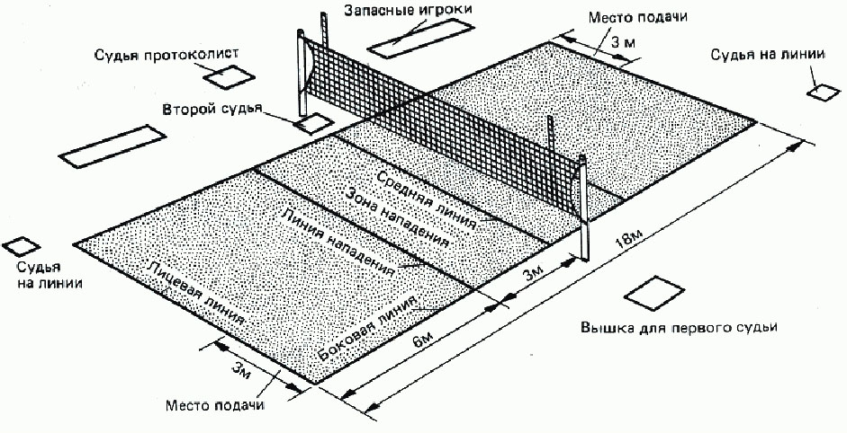

Размер стандартного волейбольного поля составляет 18 метров в длину и 9 метров в ширину. Сетка расположена таким образом, что её высшая точка находится на высоте 2,43 метра от земли на мужских соревнованиях и 2,24 метра — на женских. Эти размеры были утверждены Международной федерацией волейбола в 1925 году и являются актуальными до сегодняшнего дня. Игровая поверхность должна быть горизонтальной, плоской, однообразной и светлой.
В волейболе есть понятие свободной зоны на игровом поле. Размеры свободной зоны регламентированы и составляют 5-8 метров от лицевых линий и 3-5 метров от боковых. Свободное пространство над игровым полем должно равняться 12,5 метрам.
Игровая площадка ограничивается двумя боковыми и лицевыми линиями, которые учитываются в размере поля. Ось средней линии, проведенной между боковыми, делит игровое место на две равные части 9 х 9 м. Она проводится под сеткой и разграничивает зоны соперников. Полоса атаки наносится на каждой половине поля позади средней линии в трех метрах от нее.